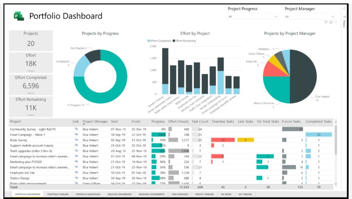

Data
Quality Check
Workflow
In every project, I always start by using the same framework to develop a good outcome. It is simple but efficient. It goes like that:
- Understand the problem
- Document and Create Test Cases
- Query Data Issues
- Analyze the Data and Execute Test Cases
- Understand the problem: In order to understand the problem / task - attend the refinement session to clarify any question(s) and get more knowledge on the subject, go through the acceptance criteria, break down the narrative and consider the relationships between the different components. if necessary, ask clarifying questions or visualize the data to enhance your understanding.
- Create Test Cases: After the problem has been understood, define the purpose of the story/ problem, then create test cases to catch all the necessary use cases
- Query Data Issues: Always check Data for this in addition to testing the Story problem
- Primary keys or columns that are not null, do no have nulls or blank field
- Data Check for Duplicates
- Standardization
- Inconsistent entry and missing values
- Bad practice on column names
- Analyze the data and execute test cases: Perform various Run the test cases you created from story problem, validate the robustness of the analysis by using different dataset or methodologies.
- Verify that all required tables have been created in the database schema.
- Check that each table contains the expected columns with the correct data types.
- Test that columns with specific constraints (e.g., PRIMARY KEY, FOREIGN KEY, NOT NULL) are defined correctly.
- Ensure that default values are correctly set for applicable columns.
- Validate that column lengths match the defined requirements.
- Test for consistency in naming conventions of tables and columns.
- Check for any duplicate columns across different tables.
- Validate that appropriate indexes are defined for frequently queried columns.
- Test that unique constraints are enforced for columns that should have unique values.
- Verify that columns used for joins have proper indexing to optimize query performance.
- Table and Column Regression Validation:
Worked on Visualizing Data in Power Bi and also created dashbords for Test team to track each sprint progress using Azure devops dashboards 